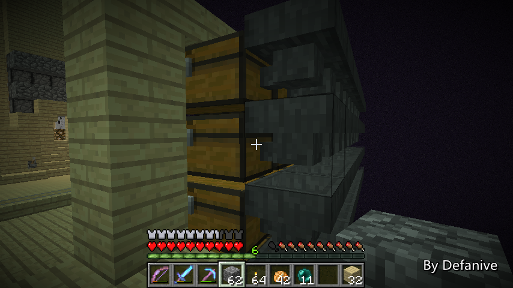
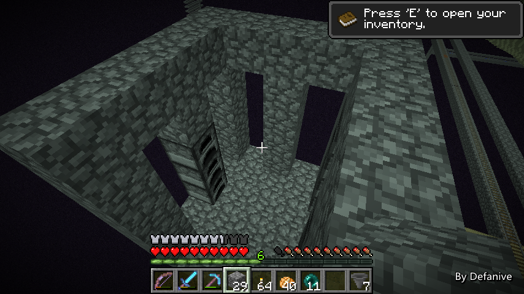
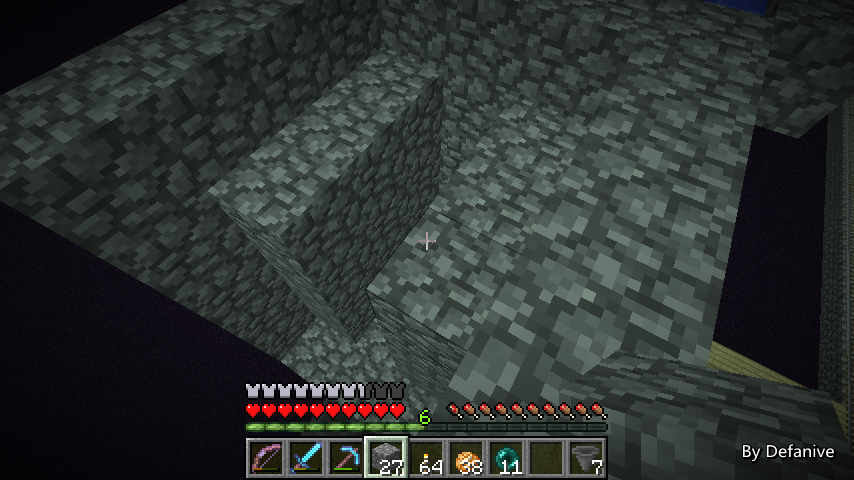
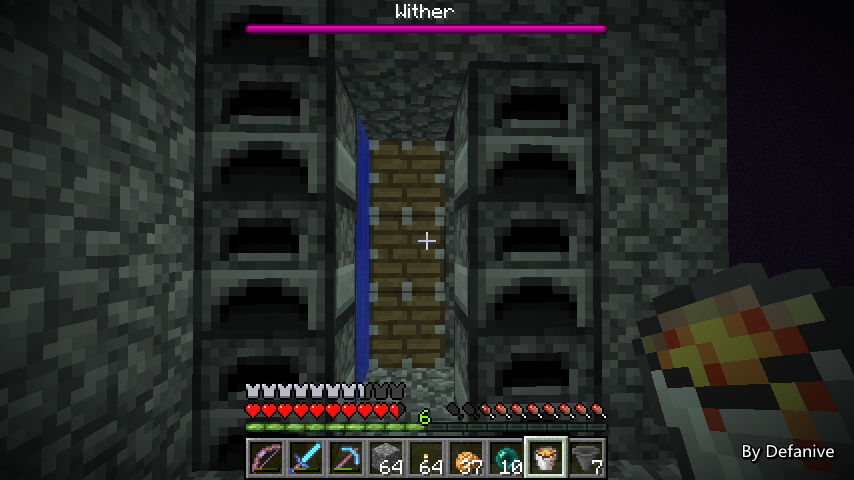
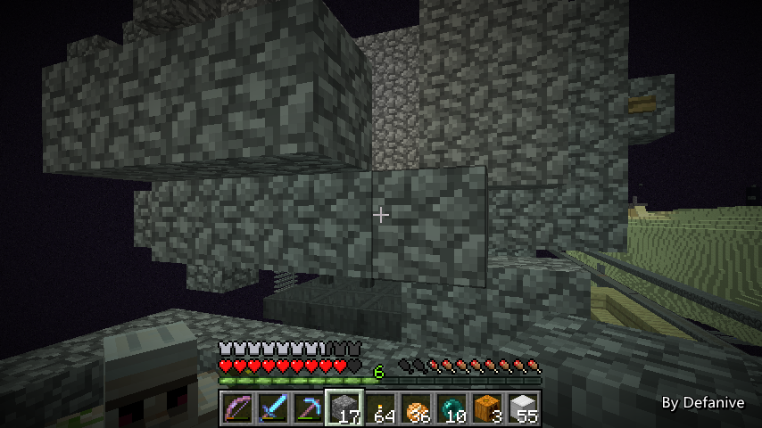
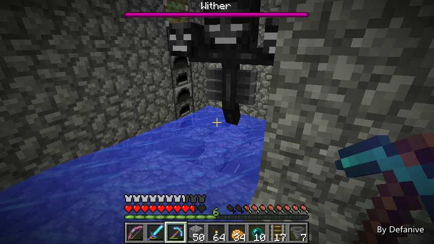

首页
上一页
280
281
282
283
284
285
285
286
287
288
289
290
下一页
末页
defanive2
无尽黑夜
14
而这次要做的右半边，将会把目标指向鹅卵石
资源站的右半边将会做成全自动的刷石机！
虽然说平时鹅卵石消耗基本不多
家里留有2大箱子，各种工程四周也分散几大箱子
但是对于接下来的几个大工程来说
鹅卵石都是消耗量非常大的材料之一
所以说批量生产鹅卵石肯定是当前的一大任务啦
——来自 MCLive
26933楼
2014-03-29 13:50
defanive2
无尽黑夜
14
带上足够的材料，准备出发啦
这个也算是一个相对比较大的工程了
不知道今天能不能做完
——来自 MCLive
26938楼
2014-03-29 13:58
defanive2
无尽黑夜
14
接下来往资源站出发吧！
——来自 MCLive
26940楼
2014-03-29 14:02
defanive2
无尽黑夜
14
虽然说左侧的装潢还没完成
不过右侧先开工吧，实用性比美观重要
——来自 MCLive
26942楼
2014-03-29 14:06
defanive2
无尽黑夜
14
首先先把收集装置的箱子做好
全自动刷石机当然用的是凋零
因此凋零所在的3x3范围肯定是收集区了
接下来就打算把3x3收集的9条管道分别送到9列箱子里面
最后做成9x4的收集区
量产嘛，嗯
——来自 MCLive
26947楼
2014-03-29 14:24
defanive2
无尽黑夜
14
接下来就是把漏斗都布置好
有了树场V5之后，曾经得省着用的木头资源也不怕了
——来自 MCLive

26948楼
2014-03-29 14:28
defanive2
无尽黑夜
14
原木用完了就在旁边刷，就地取材
——来自 MCLive
26950楼
2014-03-29 14:32
defanive2
无尽黑夜
14
3x3的收集区域分别分开成9条管道给到9列箱子里
消耗了挺多的漏斗
——来自 MCLive
26955楼
2014-03-29 14:48
defanive2
无尽黑夜
14
有了3x3平台之后就可以开始构建基本结构了
凋零将会朝向我们这边
后面，左侧，右侧分别会有造石机推石头进来
石头填满之后就会伤害凋零，破坏刷出来的石头
——来自 MCLive

26960楼
2014-03-29 15:02
defanive2
无尽黑夜
14
接下来制作一个4格高的造石机
一次可以产生2列4格高的石头
——来自 MCLive
26969楼
2014-03-29 15:22
defanive2
无尽黑夜
14
这个时候可以看到产生的2列石头了
PS 由于是在END做的
在END中岩浆流速为0.75秒一格
对比普通世界的1.5秒一格来说，速度快了一倍
——来自 MCLive
26971楼
2014-03-29 15:29
defanive2
无尽黑夜
14
激活后面活塞的话，会看到2列石头不断的产出
这个是造石机一个循环的第一步
2列产出4个石头的造石机进行3次造石
——来自 MCLive

26973楼
2014-03-29 15:34
defanive2
无尽黑夜
14
由于很SB的没带够岩浆
得先回家一次
——来自 MCLive
26974楼
2014-03-29 15:35
defanive2
无尽黑夜
14
取完岩浆，继续回到END建造
左侧的造石机是一个3列一个4列的
为了不遮挡凋零的视线（凋零的头在第4格）
因此前排的造石机不能造得那么高，只能3格
——来自 MCLive
26977楼
2014-03-29 15:45
defanive2
无尽黑夜
14
同样浇上岩浆之后也能正常工作了
——来自 MCLive
26978楼
2014-03-29 15:46
defanive2
无尽黑夜
14
右侧的造石机也同样是3格高
PS 熔炉是为了方便在测试时电路出错了的话
整个机器不会被造石机的活塞破坏
——来自 MCLive

26980楼
2014-03-29 15:51
defanive2
无尽黑夜
14
最后把用于造成凋零窒息的活塞放到位
所有的活塞和造石机布置都已经完成了
PS 建造过程的确是很缓慢的。。。
几分钟一张图非常正常
——来自 MCLive
26982楼
2014-03-29 15:54
defanive2
无尽黑夜
14
接下来我给大家演示一次一个造石循环吧
——来自 MCLive
26985楼
2014-03-29 15:58
defanive2
无尽黑夜
14
后方的2列造石机会不停的进行造石
由于岩浆0.75秒流动一次
自然后面的造石机也会是0.75秒推出一次
这是1.5秒时，已经推出了2列
——来自 MCLive
26986楼
2014-03-29 16:00
defanive2
无尽黑夜
14
在1.5秒-2.25秒间，也就是后面造石机造出第3次之前
窒息凋零的活塞会推出并迅速收回，窒息凋零一次
凋零被窒息后，过大约1秒就会吃掉方块
也就是在大约第3秒前把方块吃掉
——来自 MCLive
26989楼
2014-03-29 16:02
defanive2
无尽黑夜
14
2.25秒，第3列石头被造出来
——来自 MCLive
26990楼
2014-03-29 16:03
defanive2
无尽黑夜
14
接下来在2.25秒刚过后
左右两侧的造石机都同时造出石头
填满了所有不遮挡凋零视线的位置
——来自 MCLive
26991楼
2014-03-29 16:04
defanive2
无尽黑夜
14
在第3秒前，凋零把造出来的34个石头都吃掉
这样一个造石循环就完成了
一个循环是2.25秒，34个石头
算下来的速度就是每小时54400个鹅卵石
效率非常高
——来自 MCLive
26993楼
2014-03-29 16:07
defanive2
无尽黑夜
14
接下来就是安置好铁傀儡了
第一个铁傀儡会放在视野下方
这个铁傀儡是凋零的主头透过原石墙锁定的
——来自 MCLive

27001楼
2014-03-29 16:17
defanive2
无尽黑夜
14
第二只铁傀儡当然是给凋零周围的2个头的啦
这样两个头会对着这个铁傀儡发射黑色骷髅头
——来自 MCLive
27003楼
2014-03-29 16:20
defanive2
无尽黑夜
14
接下来把内部空间封闭好
凋零脚下的4个卡位的石栅栏也放好
就可以开始召唤凋零了！
当然只有在这个时候，我才会发现
自己一如既往的很SB的忘记带了凋零骷髅头和灵魂沙。。
PS 前几天想刷骷髅头刷了一个多小时一个都没掉
后来又花了好一会才刷够的
——来自 MCLive
27006楼
2014-03-29 16:27
defanive2
无尽黑夜
14
是时候召唤凋零啦！
——来自 MCLive
27008楼
2014-03-29 16:36
defanive2
无尽黑夜
14
成功召唤！
接下来就是塞矿车的过程了
由于脚下3x3的区域都需要收集
因此除了4个角落的方块可以换成漏斗之外
其他5个方块都需要塞入漏斗矿车
——来自 MCLive
27009楼
2014-03-29 16:41
defanive2
无尽黑夜
14
矿车塞完了
塞的过程的确不方便截图，所以就没有直播了
具体步骤可以参考一下树场的塞矿车过程
——来自 MCLive

27014楼
2014-03-29 16:56
defanive2
无尽黑夜
14
现在一切都已完成，就差电路了！
虽然之前感觉一个造石循环非常复杂
其实电路非常的简单
1个0.75为周期的脉冲和1个2.25周期的脉冲而已
两个的信号根据一定的延迟给到造石机等部件上
最后的电路会在创造中讲解的
——来自 MCLive
27017楼
2014-03-29 17:04
首页
上一页
280
281
282
283
284
285
285
286
287
288
289
290
下一页
末页